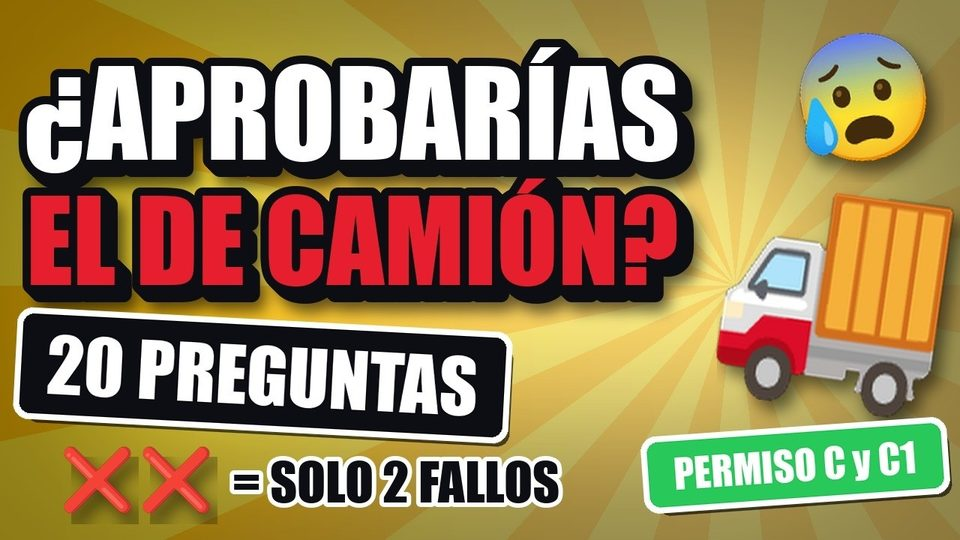

Test del permiso de camión C y C1
▶ Ver un examen completo en vídeo
¿Aprobarías el de camión?
El C1 y el C hacen el mismo teórico específico: tacógrafo, descansos, masas, carga, CAP y mecánica. Cada respuesta viene explicada y con su norma.
20preguntas en el examen
2fallos como máximo
0 €sin registro
Exámenes completos en vídeo
Hazlo de principio a fin, como el día del examen, y cuenta tus fallos.

Examen completoTEST PERMISO C y C1 🚚 20 preguntas del examen teórico de camiónDuración: 15:46. 20 preguntas como el examen real, con todas las respuestas explicadas.▶ Hacer el examen aquíEstudia por temas
Elige lo que más te cuesta y practica solo esas preguntas.
Tiempos y tacógrafo
Conducción y descansos, pausas, tarjeta y hojas de registro.
Practicar 23 preguntas
Preguntas en vídeo
Una pregunta explicada en menos de un minuto.
Cómo estudiar con el canal
Un rato al día rinde más que un atracón antes del examen.
- Responde
Haz la pregunta del día antes de ver la solución.
- Entiende
Lee por qué es correcta y qué dice el artículo.
- Repasa
Practica por temas lo que hayas fallado.
- Examínate
Haz el examen completo de 20 y cuenta tus fallos.
Cuándo hay vídeo nuevo
- Cada díaUna pregunta de camión
- ExamenCompleto de 20 preguntas, como el real
De dónde salen las respuestas
- Preguntas propias, redactadas a partir de la normativa.
- Comprobadas con la normativa (BOE y reglamentos europeos), con doble revisión.